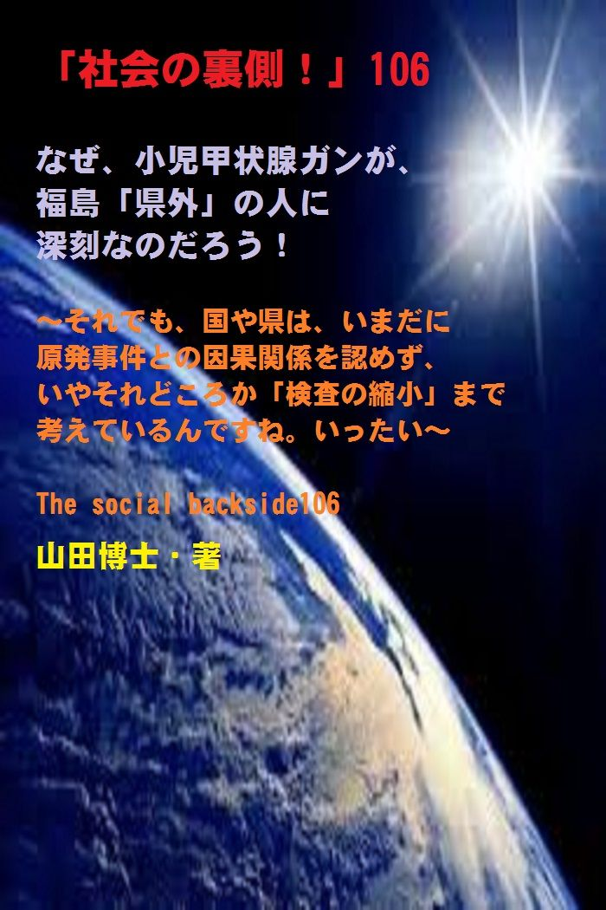

| 「社会の裏側！」106......なぜ、小児甲状腺ガンが、福島「県外」の人に深刻なのだろう！: それでも、国や県は、いまだに原発事件との因果関係を認めず、いやそれどころか「検査の縮小」まで考えているんですね。いったい | |
| 山田博士 | |
| kominitesyuppankai (2018) | |

■「社会の裏側！」106
なぜ、小児甲状腺ガンが、福島「県外」の人に深刻なのだろう！
～それでも、国や県は、いまだに原発事件との因果関係を認めず、いやそれどころか「検査の縮小」まで考えているんですね。いったい～
The social backside106
山田博士・著
★本書の著作権について
皆さんにはまったく関係ないことだと思いますが、複写、転送、抜粋、転載など、著作権侵害にあたる行為は絶対になさらないで下さい。本書の著作権は、山田博士にあります。今後、皆さんのお役に立ちたい活動が出来なくなりますので、その点、ぜひよろしくお願いします。ささささ、それでは、本書をどうぞ、ごゆっくりご覧下さい。
★概要
あのフクシマは、まだ「終了」してはおりません。
地元の人たちは、早く忘れたい。
そう思っていらっしゃるはずです。
多くの日本人たちも、きっと、そうでしょう。
だけど、大地震だけならともかく、あの「歴史的な原発大事件」が起こり、しかもその担当企業の東電も政府も、ずっとその詳しい内容を隠蔽（いんぺい）してきました。
現在も、まだまだ明らかになっていないことは多いと思います。
その中の大切な一つに、今回、本書で取り上げたような、小児甲状腺ガンが、福島「県外」の人に、なぜ深刻なのだろう......ということがあります。
★★★
ちょっと考えれば、不思議ですよね。
地元の人たちより、県外の人のほうに深刻な影響があるなんて。
ある団体が、２０１６年１２月に、療養費の給付を、初めて開始しているんですね（本書に詳しく載せています）。
そこでは、すでに手術を終えていたり、手術が決定している患者について、分析してみたといいます。
その結果、福島県内の患者は８割が「半摘（はんてき）」でしたが、「福島県外」の人を見ますと、ガンが進行してから見つかる患者さんが多いようなんですね。
そのため、８割が全摘（ぜんてき）でした。
★★★
つまり、全摘出（ぜんてきしゅつ）。
進行していたわけですね。
これは、組織あるいは器官全体を摘出するということなんです。
そのほか、リンパ節（せつ）転移についても、「福島県外」では、９０％近くに転移があったと言います。
うち３人が、ＲＩ治療の必要のある重症患者でしたが、このＲＩ療法とは、肺転移している場合の治療法なんですね。
具体的には、高濃度の「放射性ヨウ素」を内服します。
そして、遠隔転移している甲状腺ガンを内部被曝（ひばく）させて破壊しようというもの。
そのため、医療従事者や家族などへの被曝（ひばく）を防ぐために、厳格な遮蔽（しゃへい）設備が必要となるんですね。
そのためもあり、日本では現在、この治療を受けられるベッドが全国に１３５床（しょう）しかありません。
それほど、珍しいものだったわけです。
★★★
いずれにしても、今後、この子たちは、いったい、これからどう生き抜けばいいのか。
でも問題は、こうした事実が歴然と存在しているにもかかわらず、現在もなお、国も県も、こうした甲状腺ガンの多発とフクシマの原発事件との因果関係を「認めておりません」。
これはいったいどういうことなのでしょうか。
いったい、国や県は、何を恐れているのか。
そして、何を企（たくら）んでいるのか。
また、日本での原発作業員たちは、たとえ病気になっても「自己責任だ」という内容の誓約書を、入社時にしっかりと書かされているわけですね。
しかも、勤めている会社がそもそも労災保険に加入していなかったりなどの理由で、労災を申請できないと思い込んでいる人さえ多くいるようです。
これじゃ、労災どころの騒ぎじゃありません。
★★★
こうした事態にある日本は、それじゃいまからどういう方向へ向かえばいいのか。
ぜひ、皆さんとごいっしょに考えましょうよ。
この内容が、その一助になれば幸いです。
ささささ、どうぞご覧下さい。
★目次
★（第１章）
人間が、自然を支配できる。人間が、原発を支配できる。そう奢（おご）ってきた人間が、いままでこの日本にあまりにも多かったのでしょうね。そのため、いまなお、このフクシマの後始末さえできていない......
★（第２章）
小児甲状腺ガンが増えているのですが、福島県内の患者は８割が「半摘（はんてき）」でした。でも、福島「県外」の人を見ますと、ガンが進行してから見つかる患者さんが多いようなんですね。そのため、８割が全摘（ぜんてき）だったのです......
★（第３章）
日本での原発作業員たちは、たとえ病気になっても「自己責任だ」という内容の誓約書を、入社時にしっかりと書かされているわけですね。しかも、勤めている会社がそもそも労災保険に加入していなかったりして......
★（第４章）
ご存じかもしれませんが、フクシマ原発事件の後の２０１２年１０月から、福島県は、１８歳以下の福島県民の医療費を無料化にしています。でも、その対象は、あくまで「１８歳まで」。しかも、福島県外に住民票を移動させれば、その時点で医療費の無料化対象は、外れてしまうわけですね。こりゃ、ナンジャラホイ......
★「社会の裏側！」シリーズの既刊本案内
★プロフィール
（最初に、恥ずかしながら、ぼくの紹介を簡単に述べておきます）
やまだ・ひろし。
１９４７年、福井県小浜（おばま）市生まれ。
食生態学者。元大学名誉教授。日本危機管理学会会員。
山田博士いのち研究所主宰。
ベトナム戦争の終わったちょうどその年１９７５年に、マンガストーリィと商品の実名で食べものや環境を取り上げた小冊子「暮しの赤信号」を発行する。実名で取り上げたため、社会に衝撃を与えた。各号１０万部単位で読まれ、隠れたベストセラーなどと、新聞などで何度も報道される。
同じ年、偶然にも有吉佐和子さんの「複合汚染」が発表され、この小冊子はその動きも受けて多くの学校の副読本としても活用された。
文化放送の「なっちゃこワイド」や、ＮＨＫ海外放送「ある日本人」でお話しをしたり、ギター弾き語り公演や、各自治体や学校などへの講演なども続けている。
現在は、メルマガ「暮しの赤信号」（「短縮版」と「完全版」の２種）を発行し、企業名や商品名なども公表して、世界中のかたに喜ばれている。
その読者層は、医師や看護師、栄養士、教師、会社経営者、自治体など、国の内外を問わず、多くの読者たちから毎日のように便りが届いている。年齢層も、１０代からかなりの高齢のかたまで、さまざまだ。
このメルマガは、まぐまぐ！を始め３つのスタンドの合計で、７千部発行しているが、もしご関心のあるかたは、ご覧いただくと嬉しい。毎日、早朝５時に届けられる（日曜は除く）。その時刻を楽しみにされている読者も多いとか。
先述したように、メルマガ「暮しの赤信号」には２種類あり、「短縮版」のほうは無料。「完全版」のほうは、山田の思いが１００％掲載されており、社会を見るのに、毎回大いに参考になるだろう。そのほかにもさまざまな特典がある。
「短縮版」については、ご希望のかたには、お送りしてもいい。
■毎月第３土曜日に、東京の恵比寿でお茶飲み会「博々亭（ひろびろてい）」を開催。遠路から毎回読者が駆けつけている。参加条件はメルマガ読者に限定。参加費用は無料だ（８月と１２月はお休み）。
■著書には、下記のようなものがある。
『脱コンビニ食！』（平凡社新書）
『危険な食品』（宝島社新書）
『その食品はホンモノですか？』（三才ブックス）
『ひとり月１万円食費で幸せ生活』（ＷＡＶＥ出版）
『最新 危ないコンビニ食』（現代書館）
『あぶないコンビニ食』（三一新書）
『続 あぶないコンビニ食』（同）
『外食店健康度ランキング』（同）
『山田博士の暮しの赤信号』第１巻～第５巻（亜紀書房）
『暮しの赤信号』小冊子＆ＣＤ－ＲＯＭ版全２３巻
『月１万少々の食費で、ザクザクと健康を稼ぐぼくの方法』
『いのち運転"即実践"マニュアル』各話
『社会の裏側！』各巻（アマゾン発行の電子書籍）
『セーラー服と警察犬』（小説）各巻
『実話・食卓の事件簿』各巻......など。
■山田のホームページ→ http://yamadainochi.com/
■短縮版メルマガ「暮しの赤信号」専用ブログ
→ https://inochimamorutameni.hateblo.jp/
■短縮版メルマガ「暮しの赤信号」登録（無料）
→ http://goo.gl/AFx95J
★はじめに......
こんにちは。
山田博士（やまだ・ひろし）です。
本書をご覧いただき、嬉しく思っております。
この内容をご覧いただくことで、少しでもあなたが「社会の裏側！」の流れにお気づきになり、そしてたとえ１ミリでもいい、即、行動されることを願っております。
ただ読むだけでは、誰でもできます。
それでは、あなたの身の回りの状況は石のように動きません。
本書をご覧になって、これは......と思うことがあれば、即行動なさって下さい。
お願いします。
その小さな行動の積み重ねこそが、あなたの明日を、１２色のバラ色で輝かせることになると信じております。
なお、この「社会の裏側！」は、今後もシリーズとして発刊して行くつもりです。
もしご関心があれば、「社会の裏側！」という名前で、アマゾンで検索してお調べ下さい。
さまざまな問題の社会の裏側！を詳しく、しかも楽しく述べております。
ぼくの名前で検索されても、見つかるのではないかと思います。
もし、「ＰＤＦ版」でご希望の場合は、ぼくの事務局まで遠慮なくお問い合わせ下さい。事務局→ http://goo.gl/t12Yx
ささささ、能書きはそこまでにします。
どうぞ、笑顔で、頁をお繰（く）り下さい。
お楽しみに！
★（第１章）
人間が、自然を支配できる。人間が、原発を支配できる。そう奢（おご）ってきた人間が、いままでこの日本にあまりにも多かったのでしょうね。そのため、いまなお、このフクシマの後始末さえできていない......
３月１１日午後２時４６分。
あの日、あの瞬間、テーブルの下に、妻といっしょに飛び込んだことが、つい先日のことのように思い出します。
とてつもないことが起こったぞ。
テーブルの下で、ぼくは、頭上で食器棚から次々と落下しては砕（くだ）け散るガラスやコップ、茶わん類の鈍（にぶ）い音を聞きながら、いろいろと考えていました。
そのあと、街や駅のホームなどは節電とやらで薄暗くなり、駅前のコンビニの食品棚は、空っぽとなりました。
こういう事態というのは、「突然起こる」......わけですね。
そう、数分前には、誰も予想だにしていなかった......。
まるでぼくたちの体が壊れるのと、同じです。
昨日まで「元気だぞう、元気だぞう......」と叫んでいた人が、今日、突然倒れてしまう。
いずれにしても、この大地震というのは、自然界に大変化をさせるだけじゃなく、今回のように、人間という愚かな存在が作った、とても自分では制御（せいぎょ）不能な原発を、こうして暴走させてしまう結果にもつながるわけですね。
こんな簡単なことに、いつまで経っても気がつかない人間が、なんとも哀（あわ）れです。
人間が、自然を支配できる。
人間が、原発を支配できる。
そう奢（おご）っていた人間が、いままでこの日本にあまりにも多かったため、いまなおも、このフクシマの後始末さえできていないわけなんでしょう。
その「フクシマの重大な後始末」の一つとして、いま「全国各地で」問題になってきている重篤（じゅうとく）な事項があります。
しかも、フクシマじゃなく、「それ以外の地域」のほうがもっと......。
それが何かと言いますと......。
★（第２章）
小児甲状腺ガンが増えているのですが、福島県内の患者は８割が「半摘（はんてき）」でした。でも、福島「県外」の人を見ますと、ガンが進行してから見つかる患者さんが多いようなんですね。そのため、８割が全摘（ぜんてき）だったのです......
あのフクシマの原発大事件以降、甲状腺（こうじょうせん）ガンと診断された子どもたちを支援している、一つの市民団体があります。
その名前は、「３・１１甲状腺がん子ども基金」......。
この団体が、２０１６年１２月に、療養費の給付を初めて開始しているんですね。
初の給付を受けたのは３５人。
そのうち３人が、ＲＩ治療（ラジオアイソトープ治療。薬剤を用いた放射線治療のこと）の必要のある重症患者でした。
その３５人の内訳をちょっと見てみますと、福島県が２６人。
そのほか、神奈川県３人。
宮城県、群馬県、千葉県、埼玉県、長野県、新潟県が各１人。
年齢は、現在１０歳から２５歳までで、男性１４人に対し、女性は２１人......でした。
すでに手術を終えていたり、手術が決定している患者について、分析してみたといいます。
その結果、福島県内の患者は８割が「半摘（はんてき）」でしたが、「福島県外」の人を見ますと、ガンが進行してから見つかる患者さんが多いようなんですね。
そのため、８割が全摘（ぜんてき）でした。
つまり、全摘出（ぜんてきしゅつ）。
進行していたわけですね。
これは、組織あるいは器官全体を摘出するということなんです。
そのほか、リンパ節転移についても、「福島県外」では、●●％近くに転移があったと言います（●●は、下記の設問をご覧下さい）。
先述しましたように、うち３人が、ＲＩ治療の必要のある重症患者でしたが、このＲＩ療法とは、肺転移している場合の治療法なんですね。
具体的には、高濃度の「放射性ヨウ素」を内服します。
そして、遠隔転移している甲状腺ガンを内部被曝（ひばく）させて破壊しようというもの。
そのため、医療従事者や家族などへの被曝（ひばく）を防ぐために、厳格な遮蔽（しゃへい）設備が必要となるんですね。
そのためもあり、日本では現在、この治療を受けられるベッドが全国に１３５床（しょう）しかありません。
それほど、珍しいものだったわけです。
そうそう、それに、福島県は、事故当時１８歳以下だった県民を対象に、甲状腺検査も実施しています。
その結果......。
これまでに１８３人以上に、ガンまたはガンの疑いありと診断されてきたんですね。
いやあ、凄いものです！
この子たちは、いったい、これからどう生き抜けばいいのか。
でも問題は、こうした事実が歴然と存在しているにもかかわらず、現在もなお、国も県も、こうした甲状腺ガンの多発とフクシマの原発事件との因果関係を「認めておりません」。
これはいったいどういうことなのでしょうか。
いったい、国や県は、何を恐れているのか。
そして、何を企（たくら）んでいるのか。
しかも、福島県内での甲状腺検査を、なんと縮小しようという動きさえあるんですね。
もう「フクシマ」は、終わったとでも言いたいかのように......。
そして、今後は、すべての子どもたちを対象にする検査じゃなくなり、「希望者だけ」とするようです。
ったく......。
もう、何と言っていいやら。
しかも、まだまだ「驚くべき問題」があります(笑)。
え？
本当に？
......なんて、ぼくならずとも、きっと聞きたくなりますよ。
それは......。
★（第３章）
日本での原発作業員たちは、たとえ病気になっても「自己責任だ」という内容の誓約書を、入社時にしっかりと書かされているわけですね。しかも、勤めている会社がそもそも労災保険に加入していなかったりして......
えっと......。
あのフクシマの原発大事件は、誰が犯人でした？
もちろん、「東京電力」ですよね。
いわば、当事者です。
それなのに、あろうことか、甲状腺ガンと診断されていた４０代の東京電力社員の男性を、いち早く「労災」と認定しているんですね。
もちろん、この男性がどうの......というわけじゃありません。
どの組織の人物だって、同じ人間ですから、同じ処理が必要であることは十分、ぼくも分かっているつもりです。
でも、ほかの人たちがまったくその恩恵を受けずに、この東電社員だけが恩恵を受けるとなると、ちょっとその意味あいが違ってきます。
そりゃあ、そうですよね。
２０１６年の１２月、富岡労働基準監督署（福島県広野町）は、福島第一原発事故の収束作業に従事していて、その後甲状腺ガンと診断されていた４０代の東電社員の男性を、労災と認定しました。
こうなると、当然ですが、今後は、この東電社員の男性は、無料でガン治療や通院費の全額支給など、労災保険による手厚い医療補償が受けられることになります。
今回フクシマで被曝した多くの人たちが願っていることなんですね。
ところが、この被曝による甲状腺ガンが労災認定されたのは、じつは日本で初めてなんです。
いままで日本には、労災における甲状腺ガンの認定基準も目安さえ存在しなかったわけです。
そんなこと、ありますか。
日本列島に、いままでは５３基も原発が乱立していた日本で、こんなアリサマが続いていたわけですね。
つまり、原発労働者たちの健康など、１ミリも考えられていなかった......。
ぼくなど、ただただ、驚いてしまいます。
厚労省は、甲状腺ガンの当面の労災補償について、いくつかの判断の目安を持っていました。
その一つに、「潜伏期間」というものがあります。
つまり......放射線被曝からガン発症までの期間が、５年以上であること......となっているわけですね。
でも、今回、東電社員の場合は、フクシマ原発事故から３年１か月後に、甲状腺ガンと判断されています。
つまり「潜伏期間」が５年以上、という目安は満たしていません。
それなのに、「東電社員」はしっかりと労災認定されている。
なぜなのでしょうね(笑)。
なお、フクシマ第一原発事故の収束作業に参加した、元原発作業員や東電社員のうち、ガンを発病して労災保険の労災を申請した人は現在までに合計１１人です。
そのうち、わずか３人だけが労災認定され、３人は不支給決定、そして１人は労災申請の取り下げ、また４人は調査中となっているんですね。
それほど、この被曝による労災認定は、簡単ではない。
なぜか、「かなりハードルが高い」わけですね。
ところで、「原発大国であるこの日本」での原発作業員で、被曝による労災認定を受けた人は、いったい何名ぐらいだと思います？
え？
数十人？
数百人？
数千人？
残念でした。
１６名......です。
そう、わずか「１６名」。
日本での原発作業員たちは、たとえ病気になっても「自己責任だ」という内容の誓約書を、入社時にしっかりと書かされているわけですね。
しかも、勤めている会社がそもそも労災保険に加入していなかったりなどの理由で、労災を申請できないと思い込んでいる人さえ多くいるようです。
これじゃ、労災どころの騒ぎじゃありません。
たとえガンになったとしても、自分には労災が申請できないと思い込んだまま亡くなるかたがほとんどだったわけです。
家族の悲しみ。
いかほどのものだったのでしょうか。
★（第４章）
ご存じかもしれませんが、フクシマ原発事件の後の２０１２年１０月から、福島県は、１８歳以下の福島県民の医療費を無料化にしています。でも、その対象は、あくまで「１８歳まで」。しかも、福島県外に住民票を移動させれば、その時点で医療費の無料化対象は、外れてしまうわけですね。こりゃ、ナンジャラホイ......
それなのに、厚生労働省は、「東電社員」だけを優先的に労災認定してしまった......。
この東電社員の男性は、今後は無料でガン治療や通院費の全額支給など、労災保険による手厚い医療補償が受けられることになります。
いやあ、良かったですね。
何度も言いますが、ぼくは、こうした東電社員の待遇を引き落とすようなことを言っているのではなく、これはこれで良かったな......と、素直に思います。
でも、じゃなぜ、「東電社員以外」の人たちは、こうした労災認定が降りないんです？
それこそが、おかしいと思いませんか。
違いますか。
ぼくは、先ほどから、もう口が開けっ放しです。
あまりにも政府たちの行動が露骨なため、すっかり呆（あき）れてしまって......。
それなのに、先述しましたように、この福島県で甲状腺ガンになった１８３名以上の子どもたちは、いったい、今後どうなるのでしょうか。
労災のような補償もなく、たとえ見舞金などもらったとしても、そんなもの何のタシにもなりません。
ある計算によりますと、今回、福島県で見つかった甲状腺ガンの子どもたち１７４人（その計算では１７４人となっています）のうち、８５人、つまりパーセントで言えば４８％（約半分）の子どもたちが、今回、労災認定された東電社員と同時期以降に甲状腺ガンと診断された人数なのです。
だけど、こうした福島県で甲状腺ガンになった子供たちには、何の医療補償もありません。
いったい、これはどういうこと？
ぼくならずとも、そうは思いませんか。
もちろん、ご存じかもしれませんが、フクシマ原発事件の後の２０１２年１０月から、福島県は、１８歳以下の福島県民の医療費を無料化にしています。
でも、その対象は、あくまで「１８歳まで」。
しかも、福島県外に住民票を移動させれば、その時点で医療費の無料化対象は、外れてしまうわけですね。
こりゃ、なんじゃらほい。
ぼくは、もう何度も呆れてしまって、何も言えません。
なんとも、冷たい仕打ちです。
だって、どうして福島県外へ出れば、補償が受けられないわけ？
被曝したのは、みんな同じじゃありませんか。
県外へ出れば、被曝は無くなるとでも言うのでしょうか。
どうも、ぼくには役人たちの考えが分かりません(笑)。
こうした県がおこなっている「１８歳以下の医療費無料化」というのは、何のことはない、福島県内へ若年層を引き留めるための単なる政策に過ぎないわけですね。
そのため、「住民票を福島県外に移動」させれば、その時点で「さようなら」......と、なります。
なんともはや、悲しい現実です。
逆に、こうした甲状腺ガンの検診を、福島県外にも広げることが、いまこそ、必要なのじゃありませんか。
現在、どんどんと、小児甲状腺ガンが増えております。
もやは、福島県だ、いや福島県外だ......なんて騒いでいるヒマはありますまい。
ましてや、こうした検診を「縮小しよう」なんて、もはや言語道断です。
先述しましたように、「福島県外」の患者が、ガンが進行してから見つかることが多く、その場合には、もはや甲状腺の全摘がほとんどだということ。
ぼくは、自覚症状もないほかの検診については、あまりお勧めしないのですが、今回のように、その原因も理由もみな分かっている症状については、１日も早めに検診をする必要があると思っています。
それなのに、こういう事態が続いているにもかかわらず、原発技術を外国に輸出しようとしたり、各地の原発を再稼働させようとしたり、いったい、どこを向いて政策をしているの？
......なんて、言いたくもなります。
今回のタイトルにもあるように、......小児甲状腺ガンが、なぜ、福島「県外の人」に深刻なのだろう！......という事実を、よく噛みしめてほしい。
そして、いつものぼくのように、あまり「キョロキョロせず」、腰を落ち着けて、この問題に政府も国民もいっしょになって取り組んでほしいものだなと、思っております。
いまが、正念場（しょうねんば）です。
今後、ずっと続くであろう「フクシマ」を、ぼくたちはけっして忘れるわけにはいかないんですね。
子孫たちのためにも、ワンコやニャンコたちのためにも......。
ハハハ......。それじゃまた次回ね。ご機嫌よう。（山田博士）
▼設問です▼
設問→ 上記の文章を読み、下記の●●にあてはまるものを、選択語句から選んでみよ。ただし２文字とは限らない。
「そのほか、リンパ節転移についても、『福島県外』では、●●％近くに転移があったと言います」
【選択語句→ ３０、６０、９０】
■答え■
下記のとおりです。でも、先に答えを見てはいけません。
本文を再度ご覧になり、十分想像してから答えをご覧下さい。
きっとその繰り返しが、あなたの明日を輝かせることになると思っています。
答え→ ９０
(了)
★（最後にひとこと）
ここまでお読みになって下さり、ありがとうございました。
ここで述べているような内容の最新情報を、メルマガ「暮しの赤信号」では述べております。
企業名や商品名も公表していますので、もしご関心のあるかたは、下記から登録されれば、毎回、自動的にお送りします。
「短縮版」は無料です。
毎回、早朝５時に、あなたのところへ配信します。
現在、全世界で数千部を配信しておりますが、楽しい文体が人気のようですよ。早朝５時をお待ちになっているかたも......。
その日から役立つ内容です。
「短縮版」（無料です）→ http://goo.gl/AFx95J
メルマガ上で、また、お逢いしましょう！
★★「社会の裏側！」シリーズの既刊本案内
「電子版」と「ＰＤＦ版」があります。お好みのほうで、どうぞ。
これだけたくさん、マスコミも言わない内容が、存在します。ご関心のあるものから、ご覧下さい。すべて短文で、サクッと、いまの社会の真実が読めます。
下記の「検索欄」に、いまご関心のあるキィワードを入れてみて下さい。きっと、ヒットすると思います。
【全巻案内専用ブログ】→ https://syakainouragawa234.blogspot.com/
★価格は、現在のところ、５８５円～８２５円です。各巻の専用頁からお求め下さい。
★「ＰＤＦ版」は、下記のフォームからどうぞ
→ https://goo.gl/GPFu2B
価格は「電子版」と同じにしています。ただ当方の人手の問題で、できれば「電子版」をお求め下さると嬉しい。でも、どうしてもの場合は、ぜひご連絡下さい。
「ＰＤＦ版」の場合、巻数が多くなれば、かなりの割引にしていますが、上記のフォームからの「自動返信」でご確認下さい。
★
★
★
【１】社会の裏側！ １......子宮頸ガンワクチンで女子中高生が泣いている！ → https://goo.gl/BMwQTm
【２】社会の裏側！ ２......ペットボトルを「ペット」にしてはいけない。新生児の男女比が驚くことになっている！ → https://goo.gl/QuFsYz
【３】社会の裏側！ ３......牛丼店「すき家」が、従業員を貧困のどん底に！ → https://goo.gl/YrmzNf
【４】社会の裏側！ ４......小学校の低学年児に「向精神薬」を処方する医師たち！ → https://goo.gl/L97NJu
【５】社会の裏側！ ５......映画「世界が食べられなくなる日」。原子力、「遺組み」の現実！ → https://goo.gl/7HwZ38
【６】社会の裏側！ ６......蚊帳（かや）に練り込まれた「毒物」ってご存じでした？ → https://goo.gl/dMa52s
【７】社会の裏側！ ７......あなたは、放射性物質が濃縮された「エコセメント」で住宅を建てますか？ → https://goo.gl/UbkdH4
【８】社会の裏側！ ８......いまや加工食品の甘味のほとんどは「異性化糖」だ！遺伝子組み換えコーンによるこの甘味料が日本人を壊す
→ https://goo.gl/6FNSeG
【９】社会の裏側！ ９......ＬＥＤ照明の「人体実験国」ニッポン！
→ https://goo.gl/VQWQam
【１０】社会の裏側！ １０......コーラの着色料に「発ガン性」の疑惑が出た！ → https://goo.gl/XvNdfn
【１１】社会の裏側！ １１......「香料」のせいで死ぬ思いの人たちへ！日本人の母乳や脂肪から初めて検出された「人工のムスク」 → https://goo.gl/UcZRzf
【１２】社会の裏側！ １２......子どもの「健康格差」が凄まじい！なんと「就学援助」の小中学生が１４２万人になった → https://goo.gl/nGhdnC
【１３】社会の裏側！ １３......ＴＰＰと私設法廷。じつはこの「ＩＳＤ条項」こそが日本乗っ取りの要だった！→ https://goo.gl/QyH2ot
【１４】社会の裏側！ １４......築地市場移転の本当の狙い！この裏に、電通と日本ＴＶ、そしてＧＳ社が蠢いていた！ → https://goo.gl/BerZHM
【１５】社会の裏側！ １５......ミツバチたちが消えたら、人間は「４年も」生きられない！ → https://goo.gl/dRuppK
【１６】社会の裏側！ １６......偽装食品がなぜ広がるのか！阪急阪神ホテルズのニセ食材事件なんて、氷山の一角に過ぎない → https://goo.gl/S4k2Yu
【１７】社会の裏側！ １７......過去最大の「米偽装事件」。それは米離れの若者が原因だった！ → https://goo.gl/Px911Z
【１８】社会の裏側！ １８......総合ビタミン剤などのサプリメントは、ガンや心疾患のリスクを高める！ → https://goo.gl/28qECA
【１９】社会の裏側！ １９......海に漂うプラスチック破片には、人類が過去生産してきた多くの有害化学物質、とくに「ＰＯＰｓ」が含まれていた！ → https://goo.gl/gQTmb5
【２０】社会の裏側！ ２０......高血圧症患者が、「人為的に量産」されている！ → https://goo.gl/BjxoYz
【２１】社会の裏側！ ２１......子どもの貧困は、「日本の未来」を左右する！ → https://goo.gl/6g38Wq
【２２】社会の裏側！ ２２......サプリメントのほとんどが、中国産になっていた！ → https://goo.gl/zbJ4RP
【２３】社会の裏側！ ２３......食品の「製造所固有記号」の秘密。あなたにこの記号が読めるか！ → https://goo.gl/DdohXk
【２４】社会の裏側！ ２４......ドライバーの「生活習慣病」と人身事故との関係！ → https://goo.gl/iSPk3i
【２５】社会の裏側！ ２５......武田薬品工業のニセ高血圧治療薬「ブロプレス」問題は、何を物語っているのか。その衝撃的背景！
→ https://goo.gl/RdVsmj
【２６】社会の裏側！ ２６......砂糖は「炭酸飲料１缶でアウト」というＷＨＯ指針の理由とは！ → https://goo.gl/x62eDU
【２７】社会の裏側！ ２７......なんと「発達障害児」の急増に、「農薬」が関係していた！ → https://goo.gl/HKdw63
【２８】社会の裏側！ ２８......田中正造「真の文明は、山を荒らさず、川を荒らさず、村を破らず、人を殺さざるべし！」
→ https://goo.gl/enMLkE
【２９】社会の裏側！ ２９......治験。ネットの求人欄で、「とくに日本人」を募集するアメリカでの実態！ → https://goo.gl/nmWfhA
【３０】社会の裏側！ ３０......「味噌」が、放射性物質を除去するこの実験。世界の人に知らせたい！ → https://goo.gl/BMFNnc
【３１】社会の裏側！ ３１......「夢のリニア新幹線計画」が、日本人を壊（こわ）す４大理由！ → https://goo.gl/Le9iR1
【３２】社会の裏側！ ３２......「食べもの戦争」は、異常気候の変動でこう勃発する！ → https://goo.gl/A1VY4S
【３３】社会の裏側！ ３３......「ＳＴＡＰ細胞」大騒動と、理研コンツェルンのねらいとは！ → https://goo.gl/qP9A9K
【３４】社会の裏側！ ３４......遺伝子組み換えの「不妊サケ」が、食卓に並ぶ日が来た！ → https://goo.gl/f8Ddif
【３５】社会の裏側！ ３５......カネボウ美白化粧品や、ＤＨＣ社「ディープクレンジングオイル」にみる「医薬部外品」の陰謀とは！
→ https://goo.gl/cQ1qvE
【３６】社会の裏側！ ３６......食べものに「放射線」を照射すると、その食品自体から放射線が出る危険性が分かった！
→ https://goo.gl/BlmXwd
【３７】社会の裏側！ ３７......原発汚染時代の、ニッポンの「魚」の食べかた！ → https://goo.gl/mQN0pK
【３８】社会の裏側！ ３８......じつは「家族農業」が、日本の飢餓リスクを救う！ → https://goo.gl/O1eS2i
【３９】社会の裏側！ ３９......遺伝子組み換え「ご飯」が、もうまもなくあなたの食卓に！ → https://goo.gl/xxHcQy
【４０】社会の裏側！ ４０......「女性の目線」に立った原発レポート！ → https://goo.gl/UbsWYt
【４１】社会の裏側！ ４１......糖尿病予備軍の人が、「熱中症」で亡くなるこの衝撃理由！ → https://goo.gl/JwcNQD
【４２】社会の裏側！ ４２......子どもの好きな食品に、これだけも遺伝子組み換え作物が使われていた。実名リスト付き！
→ https://goo.gl/9wtRGi
【４３】社会の裏側！ ４３......自閉症などの発達障害は、遺伝じゃなく、農薬などの「環ホル」が原因であることが分かった！
→ https://goo.gl/jdhiEo
【４４】「社会の裏側！」４４......ファッション企業の「ファーフリー」（毛皮は扱わない）の動きが広まったが、中国ではアンゴラウサギたちが今日も生きたまま！ → https://goo.gl/KFW6Zg
【４５】「社会の裏側！」４５......広く使われている「人工甘味料」が、実際には、糖尿病のリスクを逆に高めていた。その衝撃的な事 実とは！ → https://goo.gl/xnC1Xn
【４６】「社会の裏側！」４６......ミツバチが消えた。じつは、あなたがシックハウスや居間の殺虫剤で倒れる原因も、これと同じだった！ → https://goo.gl/aUskUS
【４７】「社会の裏側！」４７......愛するペットに「ペットフード」を与えてはいけない！ → https://goo.gl/Hm9mfR
【４８】「社会の裏側！」４８......学校給食の栄養士が「本当は」使いたくない中国食材とは！ → https://goo.gl/mhveE8
【４９】「社会の裏側！」４９......なぜ、「栄養ドリンク剤」を未成年に禁止している国があるのか！ → https://goo.gl/thazbz
【５０】「社会の裏側！」５０......あなた、「老人難民」になりますか。それとも死にますか？ → https://goo.gl/QfxAyo
【５１】「社会の裏側！」５１......甘味料「Ｓｐｌｅｎｄａ」でダイエット中のかた、ご愁傷さまです！ → https://goo.gl/a1tdan
【５２】「社会の裏側！」５２......バター不足は、「農畜産業振興機構」という天下り団体の自作自演だった！ → https://goo.gl/sguZcw
【５３】「社会の裏側！」５３......青色「ＬＥＤ」のために、世界から日本が糾弾される日！ → https://goo.gl/RCtxDW
【５４】「社会の裏側！」５４......キレる子どもと切っても切れない食生活！ → https://goo.gl/L8KVJk
【５５】「社会の裏側！」５５......正月の「しめ縄」から、放射性物質のセシウムが年ごとに増えている現実をどう見るか！
→ https://goo.gl/eQJXm6
【５６】「社会の裏側！」５６......「プチ脳梗塞」が３０代から始まっている。人生を途中下車しないための簡単な方法はこれだ！
→ https://goo.gl/NRpcjg
【５７】「社会の裏側！」５７......男女両方の「不妊症状」が普遍的になった背景は、これだ！ → https://goo.gl/IR0PZR
■「社会の裏側！」５８......スマホやケータイの「人質」になってはいけない！ → https://goo.gl/ZhR7Qp
■「社会の裏側！」５９......「コーヒーフレッシュ」に見る、日本のコピー食品事情！ → https://goo.gl/f2LyhG
■「社会の裏側！」６０......「フクシマ３．１１」のその後！～あの日からすぐに、農産物や人体の放射性物質を測定し続けた県民たちがいた。 同じ家族でも夫のほうが数値が高いわけとは～
→ https://goo.gl/GiQyQF
■「社会の裏側！」６１......タクシー大手の「日本交通」よ、消臭剤添加の「ファブタク」なんて愚かな行為は、即お止めなさい！
→ https://goo.gl/BCFvbR
■「社会の裏側！」６２......「ペットボトル茶」を、本当のお茶だと信じて飲んでいる悲しい日本人！ → https://goo.gl/foVzzs
■「社会の裏側！」６３......抗菌石鹸は使ってはいけない！それは当然だけど、今回の事件をきっかけに、「抗菌生活」の是非を考えようよ → https://goo.gl/i1NWhQ
■「社会の裏側！」６４......コンビニの「おにぎり」が腐敗しないわけ。ＰＨ調整剤の正体とは！ → https://goo.gl/3BYY9b
■「社会の裏側！」６５......市販薬の「副作用」を、甘く見てはいけない！ → https://goo.gl/UNsNVM
■「社会の裏側！」６６......「モンサント社」という企業を、少し考えてみようと思います！ → https://goo.gl/XQVGtY
■「社会の裏側！」６７......次世代電力計「スマートメーター」の電磁波が、なぜこれだけも重大な影響を与えるのだろう。その具体的な数値をお伝えしよう！ → https://goo.gl/ev8cjr
■「社会の裏側！」６８......大企業が税金を払わなくて済む凄いカラクリ。しかも消費税が、「法人税減収」を補填していた！
→ https://goo.gl/VfHVTT
■「社会の裏側！」６９......「エナジードリンク」が、なぜ死亡事故を招きやすいのか！ → https://goo.gl/DtGmbS
■「社会の裏側！」７０......企業の「遺伝子検査」は、絶対に受けてはいけない！ → https://goo.gl/jJ8NMm
■「社会の裏側！」７１......マーガリンが、あなたの体を溶かしている！ → https://goo.gl/xTSx6r
■「社会の裏側！」７２......女性たちよ。マニキュアの３大化学物質に注意しなさい。ネイルサロンの美容部員たちが倒れる理由はこれだった！ → https://goo.gl/aPRxFG
■「社会の裏側！」７３......自殺者多発の東尋坊で、数年間に５００人を救った「ちょっと待ておじさん」から学ぶ、日本人に大切なこととは！ → https://goo.gl/Qaqyna
■「社会の裏側！」７４......夏！ 虫よけ対策、あなたならどうする？「ピレスロイド系」などにより、年間３００件の重大事故が多発中！
→ https://goo.gl/Wfggyf
■「社会の裏側！」７５......抗生物質が効かない！
→ https://goo.gl/nqYgjS
■「社会の裏側！」７６......ワン君やニャンコ嬢たちを殺してはいけない！動物を大切にしない国は、人間をも大切にしていないのです。彼らを救う３つの提案！ → https://goo.gl/QhgCew
■「社会の裏側！」７７......漁師や魚たちの涙が、君に見えるか！
→ https://goo.gl/L7GEPt
■「社会の裏側！」７８......あえて言う、大きな利権が蠢（うごめ）く「盲導犬」は、本当に必要なのだろうか！→ https://goo.gl/Ti1u6B
■「社会の裏側！」７９......大豆は、ボケを防ぐ「自然派総合ビタミン剤」です。なのに、「遺組み」表示義務がない食べものが、醤油などこれだけも溢れている！ → https://goo.gl/fS2t9e
■「社会の裏側！」８０......いまや「１０５歳人」が日本に７００名も。これら長寿者に共通する「老荘や道教思想」とは何なのか。あなたにもぜひ真似してほしい！ → https://goo.gl/7pizJz
■「社会の裏側！」８１......「在宅介護殺人事件」の裏側！
→ https://goo.gl/cQm5fX
■「社会の裏側！」８２......リプトンなどへ供給されるインドの「紅茶農園」の実態！ → https://goo.gl/yWSaKq
■「社会の裏側！」８３......見えない「低周波公害」で苦しんでいるあなたに！ → https://goo.gl/ijMMRo
■「社会の裏側！」８４......なぜ福井県は、「幸せ度がずっと日本一」なのか！ → https://goo.gl/EdxM2e
■「社会の裏側！」８５......「無糖」飲料水でもご注意。そこにカフェインが含まれると血糖値がグンと上がる衝撃データ！
→ https://goo.gl/SnDcPC
■「社会の裏側！」８６......「かっぱ寿司」、「くら寿司」、「てんや」、「ほっかほっか亭」などに使われる中国産食材と、"抗生物質不合格店"の外食企業はここだ！ → https://goo.gl/MFAa4h
■「社会の裏側！」８７......老齢基礎年金の「月５万円」で暮らす老人が８００万人。これで日本は先進国なのか。あなたが「下流老人」になるのを防ぐ方法！ → https://goo.gl/RpGfhf
■「社会の裏側！」８８......あなたがそのバナナの皮をむくとき、まさかと思う劇薬農薬が飛行機で撒かれ、涙を流している「農園労働者」の姿が見えるだろうか！ → https://goo.gl/6Vy6Gs
■「社会の裏側！」８９......「刺身盛り合わせ」に見る、滑稽さ山盛りの「食品表示制度」！ → https://goo.gl/RxMH6X
■「社会の裏側！」９０......育児と介護の「ダブルケア」どころじゃない、自己ケアを含めた「トリプルケア」時代を、どう乗り切るか！
→ https://bit.ly/2IxM6Qy
■「社会の裏側！」９１......クルマの車内で浴びる電磁波の凄い量と、人体への影響とは！ → https://bit.ly/2GDu7eM
■「社会の裏側！」９２......日本企業の「武器輸出」を止めさせる、一番簡単な方法！ → https://bit.ly/2HAD5Xq
■「社会の裏側！」９３......若い漁師の姿が消えた悲しい港町。「日本漁業」を救う方法が一つある！ → https://bit.ly/2M1jt0F
■「社会の裏側！」９４......危ないＮＨＫ。解体のすすめ！
→ https://bit.ly/2knr9NX
■「社会の裏側！」９５......もし、「鉄腕アトム」が悪いヤツらの味方だったら！ → https://bit.ly/2LcYkiT
■「社会の裏側！」９６......たった１本の歯が、認知症の一大原因だった！ → https://bit.ly/2JRKoKR
■「社会の裏側！」９７......最近、野菜の農薬の匂い、きつくないですか？ → https://bit.ly/2KcSq0R
■「社会の裏側！」９８......２週に１度頻発している「介護殺人」で、主役にならぬ方法！ → https://bit.ly/2Jgz9u2
■「社会の裏側！」９９......「生理用の紙ナプキン」が、女性たちを泣かせている！ → https://bit.ly/2NhSlKr
■「社会の裏側！」100......「イチゴ」は食べてはいけない！日本農産物「安全神話」の崩壊をどう防ぐか！→ http://tiny.cc/hztnwy
■「社会の裏側！」101......子を捨てる親たちよ！ なぜ君たちは「養子縁組」の選択肢を持たないのだ！ → https://bit.ly/2LlTKyg
■「社会の裏側！」102......「ファクトリー・ファーミング（工場式畜産）」が、抗生物質の効かない体を作っていた！
→ https://bit.ly/2P5Yw5f
■「社会の裏側！」103......「パン食」が、日本人の心と体を壊（こわ）している！ → https://bit.ly/2NupNkw
■「社会の裏側！」104......漫画家さくらももこさんの「乳ガン死」で思うこと。最近、この症状が女性に急増しているのはなぜなのだろう！ → https://bit.ly/2Mqim9B
■「社会の裏側！」105......日本人は、昔から「エシカル・コンシューマー」だった。なのに、なぜいま、あえて逆方向に向かうのだろう！
→ https://bit.ly/2JiwnGi
★「ＰＤＦ版」の場合は、下記のフォームからご連絡下さい。巻数が多くなれば、かなりの割引にしていますので、お楽しみに！
→ https://goo.gl/GPFu2B
★奥付
「社会の裏側！」106......なぜ、小児甲状腺ガンが、福島「県外」の人に深刻なのだろう！
～それでも、国や県は、いまだに原発事件との因果関係を認めず、いやそれどころか「検査の縮小」まで考えているんですね。いったい～
The social backside106
山田博士・著
第１刷発行日：2018/10/30
－－－－－－－－－－－－－－－－－－－－－－－－－－－－－－
山田博士／著
発行／こみにて出版会
105-0001東京都港区虎ノ門２－２－５共同通信会館Ｂ１Ｆ
メインホームページ→ http://yamadainochi.com/
短縮版メルマガ「暮しの赤信号」専用ブログ
→ https://inochimamorutameni.hateblo.jp/
事務局→ http://goo.gl/t12Yx
－－－－－－－－－－－－－－－－－－－－－－－－－－－－－－